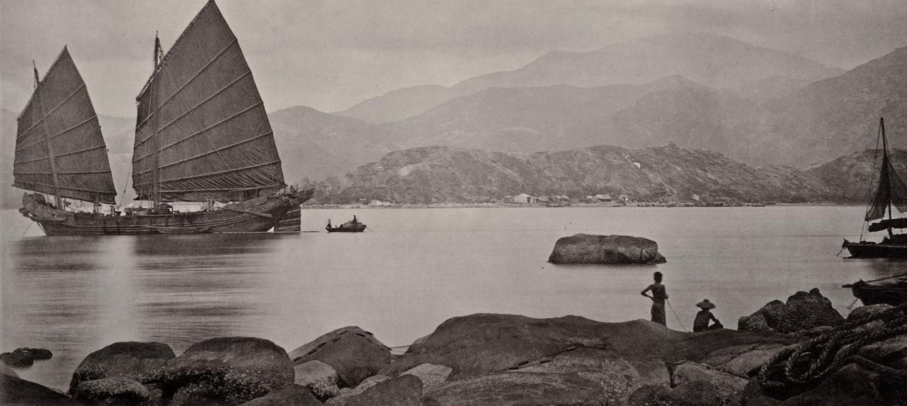
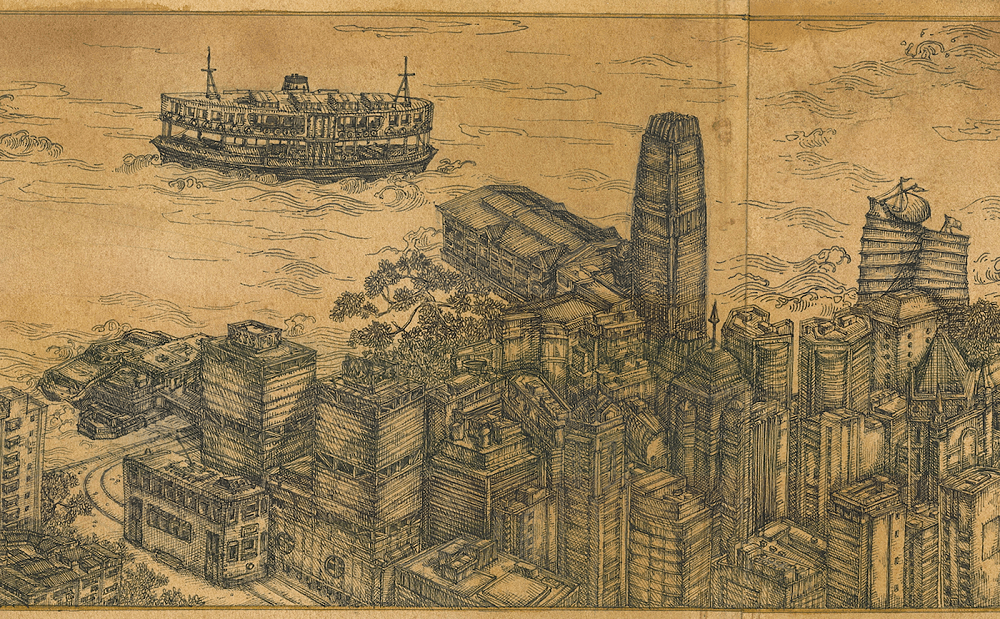
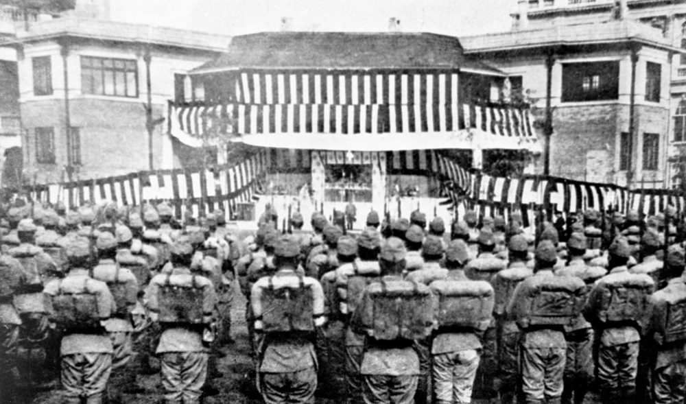

History of Hong Kong
Prehistory
Archaeological studies support human presence in the Chek Lap Kok area (now Hong Kong International Airport) from 35,000 to 39,000 years ago and on Sai Kung Peninsula from 6,000 years ago. Wong Tei Tung and Three Fathoms Cove are the earliest sites of human habitation in Hong Kong during the Paleolithic Period. It is believed that the Three Fathom Cove was a river-valley settlement and Wong Tei Tung was a lithic manufacturing site. Excavated Neolithic artefacts suggested cultural differences from the Longshan culture of northern China and settlement by the Che people, prior to the migration of the Baiyue (modern-day Viets) to Hong Kong. Eight petroglyphs, which dated to the Shang Dynasty (c. 1600 BC – 1066 BC) in China, were discovered on the surrounding islands.
Imperial China
In 214 BC, Qin Shi Huang, the first emperor of a centralised China, conquered the Baiyue tribes in Jiaozhi (modern-day Liangguang region and Vietnam) and incorporated the area of Hong Kong into his imperial China for the first time. Hong Kong proper was assigned to the Nanhai commandery (modern-day Nanhai District), near the commandery's capital city Panyu.
After a brief period of centralisation and collapse of the Qin dynasty, the area of Hong Kong was consolidated under the Kingdom of Nanyue (Nam Viet), founded by general Zhao Tuo in 204 BC. When Nanyue lost the Han-Nanyue War in 111 BC, Hong Kong came under the Jiaozhi commandery of the Han dynasty. Archaeological evidence indicates an increase of population and flourish of salt production. The Lei Cheng Uk Han Tomb on the Kowloon Peninsula is believed to have been built as a burial site during the Han dynasty.
From the Han dynasty to the early Tang dynasty, Hong Kong was a part of Bao'an County. In the Tang dynasty, modern-day Guangzhou (Canton) flourished as an international trading centre. In 736, the Emperor Xuanzong of Tang established a military stronghold in Tuen Mun to strengthen defence of the coastal area. The nearby Lantau Island was a salt production centre and salt smuggler riots occasionally broke out against the government. In c. 1075, The first village school, Li Ying College, was established around 1075 AD in modern-day New Territories by the Northern Song dynasty. During their war against the Mongols, the imperial court of Southern Song was briefly stationed at modern-day Kowloon City (the Sung Wong Toi site) before their ultimate defeat by the Mongols at the Battle of Yamen in 1279. The Mongols then established their dynastic court and governed Hong Kong for 97 years.
From the mid-Tang dynasty to the early Ming dynasty (1368–1644), Hong Kong was a part of Dongguan County. During the Ming dynasty, the area was transferred to Xin'an County. The indigenous inhabitants at that time consisted of several ethnicities such as Punti, Hakka, Tanka and Hoklo.
European Discovery
The earliest European visitor on record was Jorge Álvares, a Portuguese explorer, who arrived in 1513. Having established a trading post in a site they called "Tamão" in Hong Kong waters, Portuguese merchants commenced with regular trading in southern China. Subsequent military clashes between China and Portugal, however, led to the expulsion of all Portuguese merchants from southern China.
Since the 14th century, the Ming court had enforced the maritime prohibition laws that strictly forbade all private maritime activities in order to prevent contact with foreigners by sea. When the Manchu Qing dynasty took over China, Hong Kong was directly affected by the Great Clearance decree of the Kangxi Emperor, who ordered the evacuation of coastal areas of Guangdong from 1661 to 1669. Over 16,000 inhabitants of Xin'an County including those in Hong Kong were forced to migrate inland; only 1,648 of those who had evacuated subsequently returned.
British Crown Colony: 1842–1941
In 1839, threats by the imperial court of Qing to sanction opium imports caused diplomatic friction with the British Empire. Tensions escalated into the First Opium War. The Qing admitted defeat when British forces captured Hong Kong Island on 20 January 1841. The island was initially ceded under the Convention of Chuenpi as part of a ceasefire agreement between Captain Charles Elliot and Governor Qishan. A dispute between high-ranking officials of both countries, however, led to the failure of the treaty's ratification. On 29 August 1842, Hong Kong Island was formally ceded in perpetuity to the United Kingdom of Great Britain and Ireland under the Treaty of Nanking. The British officially established a Crown colony and founded the City of Victoria in the following year.
The population of Hong Kong Island was 7,450 when the Union Flag raised over Possession Point on 26 January 1841. It mostly consisted of Tanka fishermen and Hakka charcoal burners, whose settlements scattered along several coastal hamlets. In the 1850s, a large number of Chinese immigrants crossed the then-free border to escape from the Taiping Rebellion. Other natural disasters, such as flooding, typhoons and famine in mainland China would play a role in establishing Hong Kong as a place for safe shelter.
Further conflicts over the opium trade between Britain and Qing quickly escalated into the Second Opium War. Following the Anglo-French victory, the Crown Colony was expanded to include Kowloon Peninsula (south of Boundary Street) and Stonecutter's Island, both of which were ceded to the British in perpetuity under the Convention of Beijing in 1860.
In 1898, Britain obtained a 99-year lease from Qing under the Convention for the Extension of Hong Kong Territory, in which Hong Kong obtained a 99-year lease of Lantau Island, the area north of Boundary Street in Kowloon up to Shenzhen River and over 200 other outlying islands.
Hong Kong soon became a major entrepôt thanks to its free port status, attracting new immigrants to settle from both China and Europe. The society, however, remained racially segregated and polarised under early British colonial policies. Despite the rise of a British-educated Chinese upper-class by the late-19th century, race laws such as the Peak Reservation Ordinance prevented ethnic Chinese in Hong Kong from acquiring houses in reserved areas such as Victoria Peak. At this time, the majority of the Chinese population in Hong Kong had no political representation in the British colonial government. The British governors did rely, however, on a small number of Chinese elites, including Sir Kai Ho and Robert Hotung, who served as ambassadors and mediators between the government and local population.
n 1904, the United Kingdom established the world's first border and immigration control; all residents of Hong Kong were given citizenship as Citizens of United Kingdom and Colonies (CUKC).Hong Kong continued to experience modest growth during the first half of the 20th century. The University of Hong Kong was established in 1911 as the territory's oldest higher education institute. While there had been an exodus of 60,000 residents for fear of a German attack on the British colony during the First World War, Hong Kong remained peaceful. Its population increased from 530,000 in 1916 to 725,000 in 1925 and reached 1.6 million by 1941.
In 1925, Cecil Clementi became the 17th Governor of Hong Kong. Fluent in Cantonese and without a need for translator, Clementi introduced the first ethnic Chinese, Shouson Chow, into the Executive Council as an unofficial member. Under Clementi's tenure, Kai Tak Airport entered operation as RAF Kai Tak and several aviation clubs. In 1937, the Second Sino-Japanese War broke out when the Japanese Empire expanded its territories from northeastern China into the mainland proper. To safeguard Hong Kong as a freeport, Governor Geoffry Northcote declared the Crown Colony as a neutral zone.
Japanese occupation: 1941–45
As part of its military campaign in Southeast Asia during Second World War, the Japanese army moved south from Guangzhou of mainland China and attacked Hong Kong in 1941. on 8 December 1941.[77] Crossing the border at Shenzhen River on 8 December, the Battle of Hong Kong lasted for 18 days when British and Canadian forces held onto Hong Kong Island. Unable to defend against intensifying Japanese air and land bombardments, they eventually surrendered control of Hong Kong on 25 December 1941. The Governor of Hong Kong was captured and taken as a prisoner of war. This day is regarded by the locals as "Black Christmas".
During the Japanese occupation of Hong Kong, the Japanese army committed atrocities against civilians and POWs, such as the St. Stephen's College massacre. Local residents also suffered widespread food shortages, limited rationing and hyper-inflation arising from the forced exchange of currency from Hong Kong dollars to Japanese military banknotes. The initial ratio of 2:1 was gradually devalued to 4:1 and ownership of Hong Kong dollars was declared illegal and punishable by harsh torture. Due to starvation and forced deportation for slave labour to mainland China, the population of Hong Kong had dwindled from 1.6 million in 1941 to 600,000 in 1945, when the United Kingdom resumed control of the colony on 30 August 1945.
Further reading available at: https://en.wikipedia.org/wiki/Hong_Kong#History